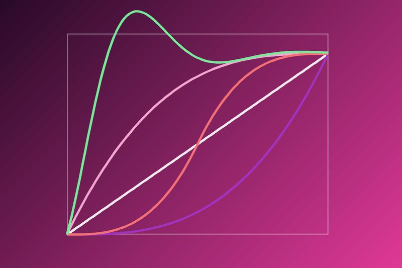

CSS-переходы
Переход (transition) — самый простой способ сделать плавное изменение стилей.
Что такое transition

Обычно при изменении стилей (например, при наведении мыши) элемент меняется мгновенно. Свойство transition позволяет сделать это изменение плавным: браузер сам посчитает все промежуточные значения.
Переход всегда происходит между двумя состояниями — начальным и конечным. Если нужно больше шагов, используют @keyframes.
Синтаксис
Пример кнопки, которая плавно меняет цвет и немного поднимается при наведении:
.button {
background-color: #6435c9;
transition: background-color 0.3s ease, transform 0.3s ease;
}
.button:hover {
background-color: #00b5ad;
transform: translateY(-3px);
}Важно писать transition у обычного состояния, а не у :hover. Тогда анимация будет работать в обе стороны.
Свойства перехода
| Свойство | Что делает | Пример |
|---|---|---|
transition-property |
какое свойство анимировать | opacity |
transition-duration |
длительность | 0.3s |
transition-timing-function |
функция плавности | ease-in-out |
transition-delay |
задержка перед началом | 0.1s |
Функции плавности

Функция плавности (easing) определяет, как меняется скорость анимации. Основные значения:
linear— одинаковая скорость всё время;ease— значение по умолчанию, быстрый старт и медленный конец;ease-in— медленное начало;ease-out— медленное окончание;ease-in-out— медленно в начале и в конце;cubic-bezier(x1, y1, x2, y2)— своя кривая, её удобно подбирать на сайте cubic-bezier.com.
Пример
Наведите мышку на квадраты. На телефоне можно нажать кнопку.
цвет
размер
поворот